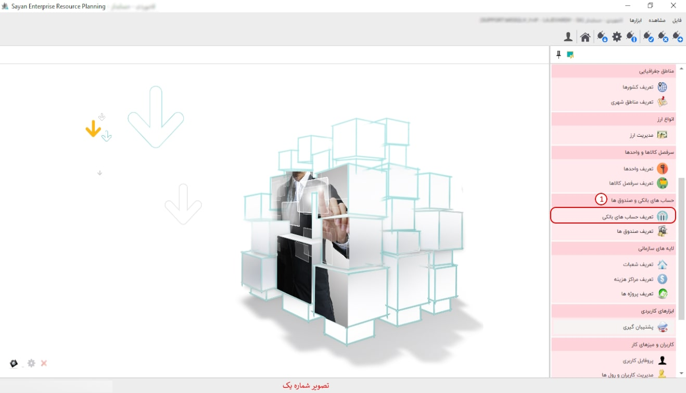
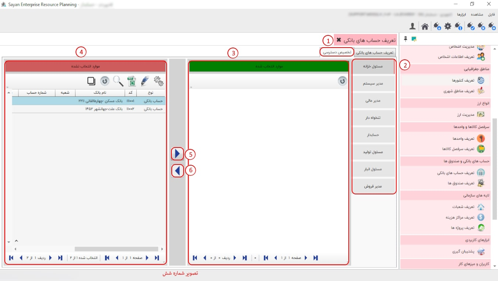

این بخش به شما امکان ایجاد و گروهبندی حسابهای بانکی را میدهد. پیشنهاد میشود ابتدا حسابهای بانکی خود را گروهبندی کنید، سپس حسابهای مربوط به هر گروه را درون آن تعریف نمایید.
برای ادامه مطلب به تصویر شماره دو مراجعه نمایید.

-حسابهای بانکی (کادر شماره یک): این بخش به شما این امکان را میدهد که حسابهای بانکی خود را تعریف و مشاهده کنید.
-حسابهای بانکی (کادر شماره دو): در این قسمت، میبایست گروه حسابهای بانکی خود را تعریف نمایید.
-کادر شماره سه: در این بخش، گروه حسابهای بانکی که تعریف کردهاید را میتوانید مشاهده کنید.

در این قسمت می بایست برای ایجاد گروه از این آیکون استفاده نمایید.
برای ادامه مطلب به تصویر شماره سه مراجعه نمایید.

-کادر شماره یک: در این قسمت، برای تعریف حسابهای بانکی، روی گروه کلیک نمایید.
-کد جزء (کادر شماره دو): در این بخش، کد جزء بهصورت پیشفرض برای شما ایجاد میشود. به همین دلیل، نیازی به تغییر در کد جزء نیست.
نکته: تعداد ارقام واردشده در کد، نشاندهنده حداکثر تعداد ردیفهایی است که میتوانید در آن گروه یا زیرگروه ایجاد کنید. همچنین، این تعداد ارقام بر تعداد نهایی نیز تأثیرگذار است.
-وضعیت (کادر شماره سه): در این قسمت، میتوانید وضعیت فعال یا غیرفعال بودن گروه بانکی خود را انتخاب کنید.
-نام گروه (کادر شماره چهار): در این بخش، شما میتوانید نام گروه خود را وارد نمایید.
-توضیحات (کادر شماره پنج): در این بخش، توضیحات بانکی خود را وارد نمایید.
برای ادامه مطلب به تصویر شماره چهار مراجعه نمایید.

-حسابهای بانکی (کادر شماره یک): در این قسمت، میتوانید زیرمجموعه حسابهای بانکی خود را تعریف نمایید.
-کادر شماره دو: در این بخش، میتوانید حسابهای بانکی که تعریف کردهاید را مشاهده کنید.
برای ایجاد حساب بانکی خود، از این آیکون استفاده نمایید.
برای ادامه مطلب به تصویر شماره پنج مراجعه نمایید.

-کادر شماره یک: در این قسمت برای ایجاد تفصیل بانکها، روی گزینه حسابهای بانکیتان کلیک نمایید.
-کد جزء (کادر شماره دو): تعداد ارقام وارد شده در کد، نشاندهنده حداکثر تعداد ردیفهایی است که میتوانید در آن گروه یا زیرگروه ایجاد کنید. همچنین، این تعداد ارقام بر تعداد نهایی نیز تأثیرگذار است.
-شعبه (کادر شماره سه): در این قسمت، شعبه بانکی خود را وارد نمایید.
-شماره کارت (کادر شماره چهار): در این بخش، شماره کارت بانکی خود را وارد نمایید.
-تلفن (کادر شماره پنج): در این قسمت، تلفن خود را وارد نمایید.
-توضیحات (کادر شماره شش): در این بخش، توضیحات بانکی خود را وارد نمایید.
-نام بانک (کادر شماره هفت): در این قسمت نام بانک خود را به همراه آدرس و کد وارد نمایید.
-شماره حساب (کادر شماره هشت): در این بخش شماره حساب بانکی خود را وارد نمایید.
-آدرس (کادر شماره نه): در این بخش آدرس را وارد نمایید.
-وضعیت (کادر شماره ده): در این قسمت میتوانید وضعیت فعال یا غیرفعال بودن حساب بانکی خود را وارد نمایید.
برای ادامه مطلب به تصویر شماره شش مراجعه نمایید.
-تخصیص دسترسی (کادر شماره یک): این بخش، این امکان را به شما میدهد که حسابهای بانکی مدنظر خود را به رول مورد نیازتان تخصیص دهید.
-کادر شماره دو: این بخش به شما این امکان را میدهد که تمامی رولهای خود را مشاهده کنید.
-موارد انتخاب شده (کادر شماره سه): در این قسمت میتوانید حسابهای بانکیتان را از موارد انتخاب نشده به موارد انتخاب شده انتقال دهید.
-موارد انتخاب نشده (کادر شماره چهار): در این قسمت میتوانید حسابهای بانکیتان را از موارد انتخاب شده به موارد انتخاب نشده انتقال دهید.

-کادر شماره پنج: برای اضافه کردن موارد انتخاب نشده، از این آیکون میتوانید استفاده کنید.

-کادر شماره شش: در این آیکون میتوانید برای حذف موارد انتخاب شده استفاده نمایید.